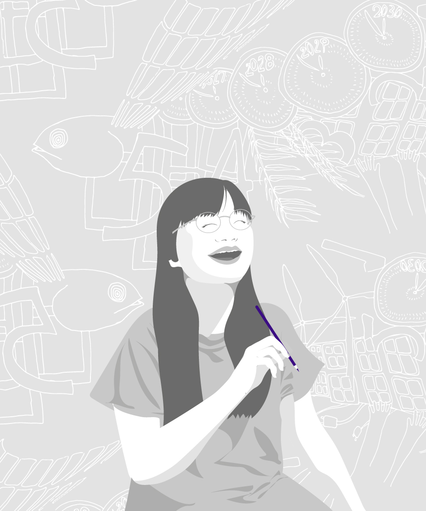

About
私たちについて
想いを、伝わるカタチに。
Handinの梅原です。 子育てをきっかけに、環境問題や気候変動への関心を深めてきました。 暮らしの中で感じた違和感から、社会課題についても考えるようになりました。 社会課題や環境問題は、発信するだけではなく、 想いや背景が伝わり、共感や行動につながることが大切だと感じています。 私自身、同じ想いを持つ仲間との出会いにも、何度も支えられてきました。 活動する中で、「誰かと取り組むことの楽しさ」をたくさん感じてきました。 だからこそ、まちづくりや気候変動対策に取り組む方々の活動を、 デザインの面から支え、伴走したいと思っています。
Handin は、 “hand in hand（手に手を取って、協力して）” という言葉から名付けています。 もともと情報を整理することが好きで、わかりやすく伝わる形へ整えることを大切にしています。 現在は、環境・社会課題分野を中心に、 NPOや行政、地域活動に取り組む方々と対話を重ねながら、 デザインの面から活動をサポートしています。
